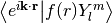

cmspy.special package¶
Subpackages¶
Submodules¶
cmspy.special.bessel module¶
-
cmspy.special.bessel.compute_planewave_component(fr, r, k, l, m)¶ Compute 
-
cmspy.special.bessel.sbt(fr, r, k, l)¶ Compute the spherical Bessel transform (SBT) of a radial function
Parameters: fr: ndarray, shape (N,)
radial function
r: ndarray, shape (N,)
radial grid
k: ndarray, shape (nkpts, 3) or (nkpts,)
k-points or k-point norms
l: int
order of the transform
cmspy.special.hydrogen module¶
-
cmspy.special.hydrogen.R10(r, Z=1)¶
-
cmspy.special.hydrogen.R20(r, Z=1)¶
-
cmspy.special.hydrogen.R21(r, Z=1)¶
-
cmspy.special.hydrogen.R30(r, Z=1)¶
-
cmspy.special.hydrogen.R31(r, Z=1)¶
-
cmspy.special.hydrogen.R32(r, Z=1)¶
-
cmspy.special.hydrogen.R_nl(n, l, r, Z=1)¶
-
cmspy.special.hydrogen.psi_nlm(n, l, m, r, theta, phi, Z=1)¶
cmspy.special.jellium module¶
-
class
cmspy.special.jellium.JelliumModel(rs, zeta=None, lattice=None)¶ Bases:
object-
compute_bandstructure(kpoints, ecut=None, eunit='Ha')¶
-
efermi¶
-
exchange_energy¶
-
kfermi¶
-
kinetic_energy¶
-
-
cmspy.special.jellium.efermi(rs, zeta=None)¶
-
cmspy.special.jellium.empty_lattice_bands(lattice, kpoints, ecut, eunit='Ha')¶ Parameters: lattice: BravaisLattice
kpoints: ndarray, shape (nkpts,3)
k-points in crystal coordinates
ecut: float
cutoff energy in Rydberg
eunit: {‘Ha’, ‘Ry’}
units for band energies
Returns: energies: ndarray, shape (nkpts,ngmax)
Notes
The number of bands returned is determined by the kpoint with the largest number of G-vectors for the given cutoff energy
-
cmspy.special.jellium.exchange_energy(rs, zeta=None)¶
-
cmspy.special.jellium.kfermi(rs, zeta=None)¶ Fermi wavevector
Parameters: rs : array_like
electron parameter
zeta: array_like
polarization
-
cmspy.special.jellium.kinetic_energy(rs, zeta=None)¶
-
cmspy.special.jellium.lifetime(rs, e, units='fs')¶ Calculate the Quinn and Ferrell result for the lifetime within Fermi liquid theory
Parameters: rs : float
electron parameter
e : array_like
evaluation energy, in eV, referenced to the Fermi energy
Returns: float:
lifetime in femtoseconds
Notes
The lifetime is infinite at the Fermi energy, so e should be strictly greater than 0.
-
cmspy.special.jellium.n2rs(n)¶
cmspy.special.shirley module¶
-
cmspy.special.shirley.compute_K0(wfcs, gvectors)¶
-
cmspy.special.shirley.compute_K1(wfcs, gvectors)¶
-
cmspy.special.shirley.compute_Vnl(wfcs, dij, beta, r, beta_has_r_factor)¶
-
cmspy.special.shirley.construct_optimal_basis(wfcs, epsilon=0.1)¶
-
cmspy.special.shirley.construct_overlap_matrix(wfcs)¶